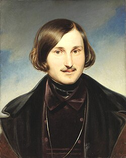

Шинель
Мёртвые души
Вий
Тарас Бульба
Нос
Ночь перед рождеством
Записки сумасшедшего
Портрет
Страшная месть
Невский проспект
Вечера на хуторе близ деканки
Заколдованное место
Сорочинская ярмарка
Ревизор
Старосветские помещики
Майская ночь, или Утопленница
Коляска
Вечер накануне Ивана Купала
Пропавшая грамота
Повесть о том, как поссорились Иван Иванович с Иваном Никифоровичем
Женитьба
Игроки
Иван Федорович Шпонька
